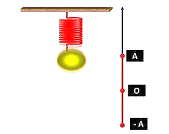

📋 Quy định làm bài
- Thời gian: 45 phút. Còn 10 phút hệ thống nhắc; hết giờ có thêm 5 phút gia hạn rồi tự động nộp.
- Bài làm ở chế độ toàn màn hình. Chuyển tab, mất focus, thoát toàn màn hình đều bị ghi nhận và báo cho giáo viên.
- Không dùng chuột phải, sao chép/dán, phím tắt. Trợ lý AI chỉ mở sau khi nộp bài. Phần tự luận: AI gợi ý điểm, giáo viên duyệt điểm chính thức.
PHẦN I. Câu trắc nghiệm nhiều phương án lựa chọn
Mỗi câu có 4 phương án, chỉ chọn một đáp án đúng (0,25 điểm).
1
Điều kiện nào sau đây là điều kiện cộng hưởng?
2
Một con lắc lò xo gồm một vật nhỏ khối lượng m (kg) và lò xo có độ cứng k (N/m). Con lắc dao động điều hòa với tần số góc là
3
Jun (J) là đơn vị đo của đại lượng Vật lí nào sau đây?
4
Chọn câu đúng: Một vật dao động điều hoà với phương trình $x = A\cos(\omega t + \varphi)$. Phương trình vận tốc của chất điểm trong quá trình dao động là
5
Đối với dao động tuần hoàn, số lần dao động được lặp lại trong một đơn vị thời gian gọi là
6
Một vật dao động điều hòa theo phương trình $x = 10\cos\left(2\pi t + \pi\right)$ (cm). Tần số góc dao động của vật là
7
Một vật dao động điều hoà với phương trình $x = A\cos(\omega t + \varphi)$. Tốc độ cực đại của chất điểm trong quá trình dao động bằng
8
Một vật dao động điều hòa theo phương ngang với phương trình $x = A\cos(\omega t)$ (với x và A tính bằng mét). Mốc tính thế năng ở vị trí cân bằng. Cơ năng của vật dao động điều hoà được tính bằng biểu thức
9
Một vật dao động điều hoà theo phương trình $x = 2\cos(4\pi t)$ cm. Vận tốc của vật ở thời điểm $t = 0{,}25$ (s) là
10
Khi nói về dao động tắt dần của một vật, phát biểu nào sau đây đúng?
11
Công thức nào sau đây biểu diễn sự liên hệ giữa tần số góc $\omega$, tần số f và chu kì T của một dao động điều hòa?
12
Trong dao động của con lắc lò xo, nhận xét nào sau đây là sai?
13
Một vật dao động điều hòa với phương trình $x = A\cos(\omega t + \varphi)$, x tính bằng mét (m). Trong phương trình, đại lượng chỉ độ dịch chuyển từ vị trí cân bằng đến vị trí của vật tại thời điểm t là
14
Đồ thị li độ theo thời gian của dao động điều hòa là một
15
Dao động điều hòa là:
PHẦN II. Câu trắc nghiệm đúng sai
Trong mỗi ý a), b), c), d) chọn Đúng hoặc Sai. Đúng 1 ý: 0,1 · 2 ý: 0,25 · 3 ý: 0,5 · 4 ý: 1,0 điểm.
1
Một con lắc đơn dài 30 cm được treo vào trần của một toa xe lửa. Con lắc bị kích động mỗi khi bánh của toa xe gặp chỗ nối nhau của đường ray. Cho biết chiều dài của mỗi đường ray là 12,5 m, xe lửa chuyển động thẳng đều. Lấy $g = 9{,}8$ m/s$^2$. 
a) Con lắc dao động với biên độ lớn nhất khi xảy ra hiện tượng cộng hưởng, tức là chu kì của xe lửa bằng chu kì dao động của con lắc.
b) Chu kì dao động riêng của con lắc: T = 1,4 s. 
c) Để con lắc dao động với biên độ lớn nhất thì chu kì của xe lửa chính là thời gian để xe lửa đi hết một thanh ray: t = T = 1,099 s.
d) Con lắc dao động với biên độ lớn nhất khi vận tốc của xe là: v = 11,876 m/s. 
2
Một con lắc lò xo gồm vật nặng có khối lượng m = 1 kg và lò xo có độ cứng 100 N/m dao động điều hoà với biên độ dao động bằng 2 cm.
a) Tần số góc của con lắc lò xo được tính bởi biểu thức  .
.
.b) Cơ năng của con lắc lò xo có giá trị 0,015 J.
c) Thế năng của con lắc lò xo khi vật có li độ 1,5 cm là 0,01125 J.
d) Động năng của vật khi quả cầu ở vị trí có li độ 1 cm là 0,015 J.
3
Một vật dao động điều hòa có phương trình là  (cm).
(cm).
(cm).a) Vận tốc biến thiên điều hoà theo thời gian sớm pha  rad so với li độ.
rad so với li độ.
rad so với li độ.b) Phương trình vận tốc của vật là  (cm/s).
(cm/s).
(cm/s).c) Tại thời điểm t = 2 s vật có tốc độ 10 cm/s và chuyển động theo chiều âm.
cm/s và chuyển động theo chiều âm.
cm/s và chuyển động theo chiều âm.d) Vật có li độ 2 cm khi tốc độ của vật là 5 (cm/s).
(cm/s).
(cm/s).PHẦN III. Câu trắc nghiệm trả lời ngắn
Điền đáp số (có thể dùng dấu phẩy hoặc dấu chấm thập phân). Mỗi câu 0,25 điểm.
1
Một vật dao động điều hòa có phương trình  . Tính li độ của vật tại thời điểm t = 0,25 (s) (kết quả tính theo đơn vị cm).
. Tính li độ của vật tại thời điểm t = 0,25 (s) (kết quả tính theo đơn vị cm).
. Tính li độ của vật tại thời điểm t = 0,25 (s) (kết quả tính theo đơn vị cm). cm
2
Chất điểm dao động điều hòa có phương trình vận tốc $v = 4\pi\cos 2\pi t$ (cm/s). Gốc tọa độ ở vị trí cân bằng. Mốc thời gian được chọn vào lúc chất điểm có vận tốc là bao nhiêu? (Kết quả làm tròn đến phần đơn vị và tính theo đơn vị mm/s).
mm/s
3
Trong máy đo địa chấn có một con lắc gắn với bút ghi. Khi có địa chấn dưới lòng đất, con lắc bị dao động cưỡng bức tác động lên bút ghi. Bút ghi vẽ dao động thu được lên một băng giấy có thể quay quanh một trục cố định.

Trong một lần đo địa chấn ở giai đoạn ổn định, quan sát viên đo được thời gian bút ghi ghi được một dao động toàn phần là 0,03 giây. Tính tần số của dao động dưới lòng đất lúc đó? (Kết quả làm tròn đến chữ số ở phần thập phân và tính theo đơn vị Hz).
Trong một lần đo địa chấn ở giai đoạn ổn định, quan sát viên đo được thời gian bút ghi ghi được một dao động toàn phần là 0,03 giây. Tính tần số của dao động dưới lòng đất lúc đó? (Kết quả làm tròn đến chữ số ở phần thập phân và tính theo đơn vị Hz).
Hz
4
Khi tiến hành thí nghiệm khảo sát dao động của vật gắn vào con lắc lò xo theo phương thẳng đứng, một học sinh đo được thời gian ngắn nhất vật đi từ vị trí cao nhất đến vị trí thấp nhất là 0,2 giây và khoảng cách giữa hai vị trí này là 6 cm. Coi vật dao động điều hoà. Tính quãng đường vật đi được sau 2 giây kể từ thời điểm đo (kết quả tính theo đơn vị cm).

cm
5
Trong tiết bài tập Vật Lý, Nam xác định vận tốc của vật dao động điều hoà bằng cách kẻ tiếp tuyến với đồ thị tại thời điểm t = 0,75 s (ứng với li độ 7,2 cm) như hình vẽ. Tiếp tuyến cắt trục Ot tại vị trí t = 0,44 s. Hãy tính vận tốc của vật ở thời điểm t = 0,75 s theo cách làm của Nam? (Kết quả làm tròn đến một chữ số ở phần thập phân và tính theo đơn vị cm/s).

cm/s